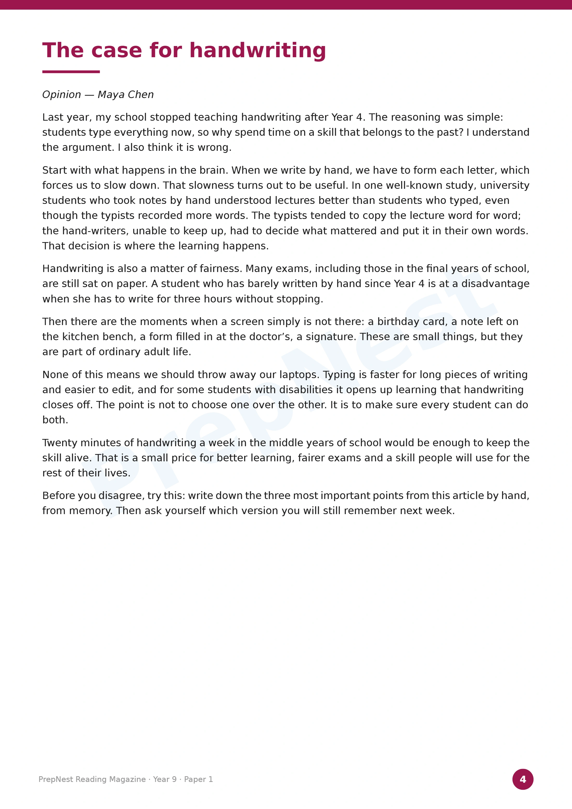

PPrepNest
Swipe
NAPLAN & VCE · Grade 3 to Year 12
Practice exams
that feel like
the real thing.
Printable papers, each with an answer key that explains every answer.


NAPLAN & VCE · Grade 3 to Year 12
Printable papers, each with an answer key that explains every answer.
NAPLAN-style Numeracy

NAPLAN-style Reading

Answer key and topic report

Every subject at every year level has one, with its answer key. No account needed to download or mark it.
Link in bio


NAPLAN & VCE · Grade 3 to Year 12
Printable papers, each with an answer key that explains every answer.
VCE Unit 3 & 4 · 2026
Try a full Methods, Specialist, General or Physics exam now.

2026 VCE exam timetable
Melbourne time, reading time included. From the VCAA 2026 VCE examination timetable. Check with your school for any changes.
Year 12 practice exams
The first practice exam in every subject is free, with its marking guide. Try it now: sit it timed, then mark it.
Link in bio
Maths and Physics exam dates
Year 9 Numeracy · No calculator
A $600 television rises in price by 10%. The new price then falls by 10%. What is the final price?
Question 28 from Maths Year 9, Practice Exam 1 (free)
Answer on the next slide →
The answer
the trap
After the rise: $660. A 10% fall takes off $66, leaving $594.
The two changes do not cancel because the second 10% is of a larger amount.
Straight from the answer key
VCE Specialist Mathematics · Exam 1
Question 13 marks
Prove by mathematical induction that 25^n - 1 is divisible by 24 for all n \in \mathbb{N}.
From the marking guide
VCE Physics · Unit 3 & 4
Five practice exams set out like the VCAA paper, each with its marking guide.
Practice Exam 1 is free · Try it now at prepnest.com.au/vce
NAPLAN-style Reading · Year 9
Every text is original, written for PrepNest, in a colour magazine like the real test.
From page 4 · Opinion
That decision is where the learning happens.
“The case for handwriting”, Year 9 Reading Magazine

NAPLAN 2027 · Grades 3, 5, 7 and 9
Each school sets its own test days inside the window. Dates from nap.edu.au.